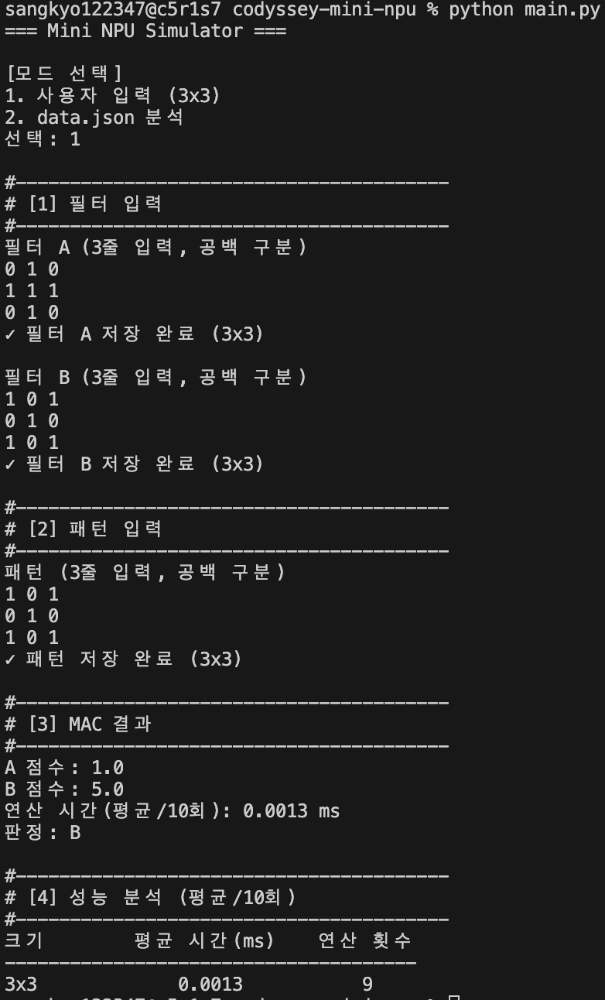
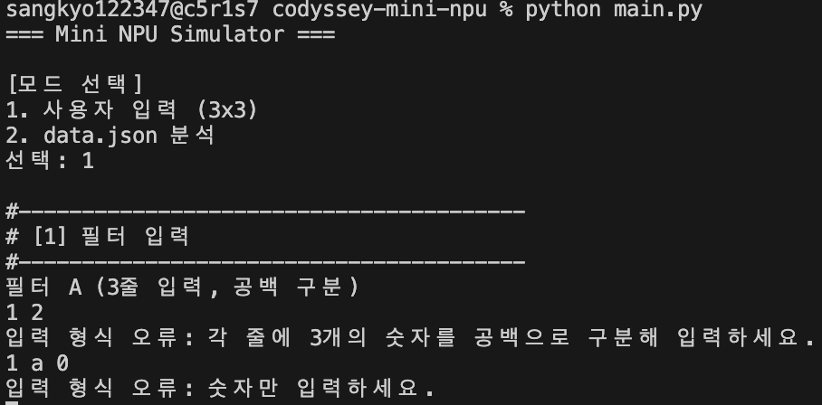
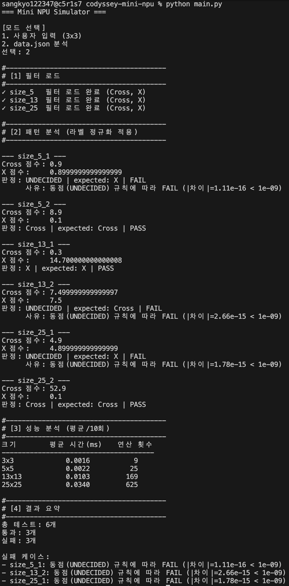

Mini NPU Simulator — 숫자로 된 그림 두 장을 겹쳐서, 같은 칸끼리 곱하고 모두 더한 점수로 십자가인지 X인지 판정합니다. 외부 라이브러리 없이 파이썬 반복문으로만 구현했습니다.
← → 방향키로 넘길 수 있습니다
사람은 십자가와 X를 한눈에 구분합니다. 컴퓨터는 모양을 못 보므로, 그림을 숫자 격자로 바꿔서 기준 그림(필터)과 얼마나 겹치는지를 세어 판단합니다.
X 모양 패턴을 넣으면 X 필터와는 5칸이 겹치고, Cross 필터와는 가운데 1칸만 겹칩니다.
이 곱하고 더하는 과정이 MAC 연산이며, 실제 AI 칩(NPU)이 하는 일과 같습니다.
코드 주석의 대괄호 번호가 그대로 구역 번호입니다. 위쪽은 부품, 아래쪽은 그 부품을 가져다 쓰는 조립품입니다.
[0] 설정값은 맨 위에 따로 뒀습니다. EPSILON = 1e-9은 [2]가, REPEAT = 10은 [6]이 가져다 씁니다. 기준을 바꿔야 할 때 이 두 줄만 고치면 프로그램 전체에 반영됩니다.
필터 A, 필터 B, 패턴을 한 줄씩 입력하면 두 점수와 연산 시간, 그리고 A·B 판정이 나옵니다.

| A 점수 | Cross 필터와 겹친 정도 |
| B 점수 | X 필터와 겹친 정도 |
| 연산 시간 | 10회 반복 후 평균, ms 단위 |
| 판정 | A · B · 판정 불가 |
모드 1은 사용자가 임의의 필터를 넣습니다. 그것이 십자가인지 프로그램은 알 수 없으므로 입력 순서대로 A·B로만 부릅니다. 이름을 붙이는 것은 data.json에 정답이 있는 모드 2의 일입니다.
개수가 안 맞거나 숫자가 아닌 값이 들어오면 안내 문구를 띄우고 그 줄부터 다시 받습니다. 처음부터 다시 시키지 않습니다.

| 1 2 | 개수 부족 → 3개를 입력하라고 안내 |
| 1 a 0 | 숫자 아님 → 숫자만 입력하라고 안내 |
| (빈 줄) | 입력 없음 → 다시 요청 |
필터 A와 B에 같은 값을 넣으면 두 점수가 같아집니다. 이때는 억지로 하나를 고르지 않고 판정 불가 를 출력합니다.
A 점수: 5.0
B 점수: 5.0
판정: 판정 불가 (|A-B| < 1e-09)
5×5, 13×13, 25×25 패턴을 파일에서 읽어 필터를 자동으로 짝지어 판정하고, 정답과 비교해 PASS·FAIL을 집계합니다.

# "size_13_2" 를 언더바로 쪼갠다 parts = key.split("_") # ['size', '13', '2'] n = int(parts[1]) # 13 ← 이것이 크기 filters["size_13"] # 짝이 되는 필터
쪼갠 조각이 3개가 아니거나 숫자가 아니면, 그 케이스만 FAIL로 기록하고 다음 패턴으로 넘어갑니다.
어느 관문에서 걸리든 continue로 그 케이스만 실패 처리하고 다음으로 넘어갑니다. 프로그램 전체가 멈추지 않습니다.
아래는 X 패턴을 Cross 필터에 넣었을 때입니다. 재생을 누르면 9칸을 훑는 순서와 점수가 쌓이는 과정이 보입니다.
def mac(pattern, filter_data):
score = 0.0 # 점수통 비우기
for row in range(len(pattern)): # 행
for col in range(len(pattern[row])): # 열
score += pattern[row][col] * filter_data[row][col]
return score
*가 Multiply, +=가 Accumulate. 이 한 줄이 MAC 그 자체입니다.
칸 수를 len()으로 세어서 씁니다. 그래서 5×5가 오면 5번, 25×25가 오면 25번 돕니다.
모드 2를 만들 때 이 함수는 한 글자도 고치지 않았습니다. 3이라는 숫자는 오직 [7] mode1의 input_matrix("필터 A", 3)에만 있습니다.
모든 칸을 정확히 한 번씩 방문하므로 연산 횟수는 N²입니다.
data.json은 십자가를 두 가지로 표기합니다. 필터 키에서는 cross, 정답 값에서는 +. 그대로 비교하면 서로 다른 값이 되어 전부 FAIL이 납니다.
| 파일 표기 | 어디에 | 표준 라벨 |
|---|---|---|
| "cross" | filters 키 | Cross |
| "+" | expected 값 | Cross |
| "x" | 양쪽 모두 | X |
def normalize_label(raw):
text = str(raw).strip().lower()
if text == "+" or text == "cross":
return "Cross"
elif text == "x":
return "X"
else:
return None # 모르는 라벨
새 표기가 추가돼도 이 함수 한 곳만 고치면 됩니다. 판정·출력·집계 코드는 손대지 않습니다.
해석되지 않는 라벨은 None을 돌려주고, 그 케이스만 FAIL 처리합니다.
컴퓨터는 0.1을 2진수로 정확히 표현하지 못합니다. 그래서 더하는 순서가 다르면 결과가 소수점 아래 16자리쯤에서 갈립니다.
>>> 0.1 + 0.2
0.30000000000000004
이 미세한 어긋남이 점수 비교에 그대로 들어옵니다. 실제 실행 결과에서도 수학적으로 같은 값이 이렇게 나왔습니다.
Cross 점수: 0.9
X 점수: 0.8999999999999999
차이: 1.11e-16
EPSILON = 1e-9
if abs(score_a - score_b) < EPSILON:
return "UNDECIDED"
elif score_a > score_b:
...
>만으로 비교하면 노이즈가 승부를 결정합니다. 1e-9보다 작은 차이는 실력 차이가 아니라 계산 순서의 잔여물이므로 동점으로 봅니다.
| 모드 1 | 모드 2 | |
|---|---|---|
| 판정 로직 | 동일 — 둘 다 [2] decide() 사용 | 동일 |
| 정답 유무 | 없음 (사용자가 임의 입력) | 있음 (expected) |
| 출력 | 판정 불가 안내 후 종료 | UNDECIDED 로 표기 |
| 집계 | 없음 | Cross도 X도 아니므로 항상 FAIL |
제공된 data.json으로 정상 구현하면 통과 3, 실패 3이 나옵니다. 원인을 세 관점으로 나눠 진단했습니다.
| 케이스 | Cross 점수 | X 점수 | 판정 | 정답 | 결과 |
|---|---|---|---|---|---|
| size_5_1 | 0.9 | 0.8999999999999999 | UNDECIDED | X | FAIL |
| size_5_2 | 8.9 | 0.1 | Cross | Cross | PASS |
| size_13_1 | 0.3 | 14.700000000000008 | X | X | PASS |
| size_13_2 | 7.499999999999997 | 7.5 | UNDECIDED | Cross | FAIL |
| size_25_1 | 4.9 | 4.899999999999999 | UNDECIDED | X | FAIL |
| size_25_2 | 52.9 | 0.1 | Cross | Cross | PASS |
아니다. 검증 4단계를 모두 통과했고 점수도 정상 출력됐습니다. 계산이 실패한 것이 아니라 두 점수가 같아서 우열을 못 가린 것입니다.
증상일 뿐이다. epsilon을 없애도 실패 수는 줄지 않습니다. 다만 epsilon 덕분에 우연한 오판정이 진단 가능한 신고로 바뀝니다.
그렇다. 근본 원인이다. 필터 값을 직접 합산해 확인했습니다. 오른쪽 표를 보세요.
| 크기 | 성립하는 관계 | 값 | 동점이 된 케이스 |
|---|---|---|---|
| 5×5 | Cross 필터 중앙 한 칸 = X 필터 전체 합 | 0.9 = 0.9 | size_5_1 |
| 13×13 | X 필터 중앙 한 칸 = Cross 필터 전체 합 | 7.5 = 7.5 | size_13_2 |
| 25×25 | Cross 필터 중앙 한 칸 = X 필터 전체 합 | 4.9 = 4.9 | size_25_1 |
Cross 패턴과 X 패턴은 정중앙 한 칸에서만 겹칩니다. 그래서 정답 필터의 점수(전체 합)와 오답 필터의 점수(중앙 한 칸)가 수학적으로 같아집니다. 크기마다 이 관계가 한 방향씩만 성립하므로 각 크기당 정확히 1건씩, 총 3건이 동점이 됩니다.
교훈: 총합 규모가 크게 다른 필터끼리 원시 MAC 점수를 직접 비교하면 안 됩니다. 실제 CNN이 정규화 기법을 쓰는 이유와 같은 문제입니다.
입출력을 제외하고 mac() 호출 구간만 10회 반복 측정 후 평균을 냈습니다.
| 크기 | 평균 시간(ms) | 연산 횟수 N² |
|---|---|---|
| 3×3 | 0.0015 | 9 |
| 5×5 | 0.0022 | 25 |
| 13×13 | 0.0103 | 169 |
| 25×25 | 0.0338 | 625 |
실측치는 실행 환경에 따라 달라집니다.
MAC은 N×N 모든 칸을 정확히 한 번씩 방문하므로 연산 횟수는 정의상 N²입니다.
13×13 → 25×25 에서 연산은 3.7배(169→625), 시간은 약 3.3배(0.0103→0.0338) 늘었습니다. 증가율이 연산 횟수 증가율에 수렴합니다.
3×3은 0.0015ms로 너무 짧아 1회 측정은 타이머 오차에 잠식됩니다. 작은 크기에서 비례가 흐트러지는 것도 함수 호출 같은 고정 비용 때문입니다.
25×25 한 건이 0.03ms지만, 실제 AI는 수백×수백 필터를 수천 개 씁니다. N² 스케일링 때문에 이미지 한 장에 수억 번의 MAC이 필요해지고, 이 단순 반복을 동시에 처리하려고 만든 것이 NPU입니다.
| main.py | 모드 1·2, MAC, 정규화, epsilon 판정, 성능 분석, 결과 요약 |
| README.md | 실행 방법, 구현 요약, 결과 리포트 |
| data.json | 제공된 필터·패턴 데이터 |
| screenshots/ | 실행 화면 캡처 |
| 외부 라이브러리 | 사용 없음 — json, time만 |
| MAC 구현 | 이중 for문으로 직접 |
| 입력 검증 | 개수·숫자 확인 후 재입력 유도 |
| 오류 처리 | 케이스 단위 FAIL, 중단 없음 |
| 점수 비교 | epsilon 1e-9 기반 |
답을 외우지 말고, 코드에서 위치를 찾아 짚으면서 말합니다.
먼저 이렇게 말합니다 — "현재 코드에서 이 요구사항을 고정하고 있는 위치부터 찾겠습니다." 그리고 Command+F로 검색해 짚습니다.
| 요구 | 검색어 | 고칠 곳 | 같이 확인할 곳 |
|---|---|---|---|
| epsilon 1e-9 → 1e-6 | EPSILON | [0] 상수 한 줄 | UNDECIDED 건수와 PASS·FAIL 결과가 바뀜 |
| 10회 → 100회 | REPEAT | [0] 상수 한 줄 | 화면 문구는 f-string이라 자동 반영 |
| 3×3 → 4×4 | input_matrix( | [7] mode1의 인자 3 | [1] mac()은 고치지 않음 — len()으로 세기 때문 |
| plus도 Cross로 인정 | normalize_label | [3] 조건에 추가 | 비교는 표준 라벨 기준이라 그대로 동작 |
| 숫자 아닌 값 입력 | except ValueError | [5] input_matrix | 안내 후 그 줄부터 재입력 |
확장 순서를 이렇게 답합니다.
| 1 | [3] normalize_label에 o 추가 |
| 2 | filters에 해당 라벨 존재 여부 확인 |
| 3 | [2] 판정을 두 개 비교 → 최댓값 방식으로 |
| 4 | 출력 문구를 라벨별 반복으로 |
| 5 | data.json에 케이스 추가해 실행 확인 |
연산이 100만 번으로 3×3의 11만 배입니다. 최적화 순서는 2차원을 1차원으로 평탄화, 0인 칸 건너뛰기, 그리고 근본적으로는 병렬 처리입니다.
MAC은 칸끼리 서로 의존하지 않아 원래 동시에 해도 되는 연산입니다. 병목은 계산이 어려워서가 아니라 단순 연산을 줄 세워 처리하기 때문에 생깁니다. NPU는 곱셈기를 수천 개 두어 한 번에 처리합니다.